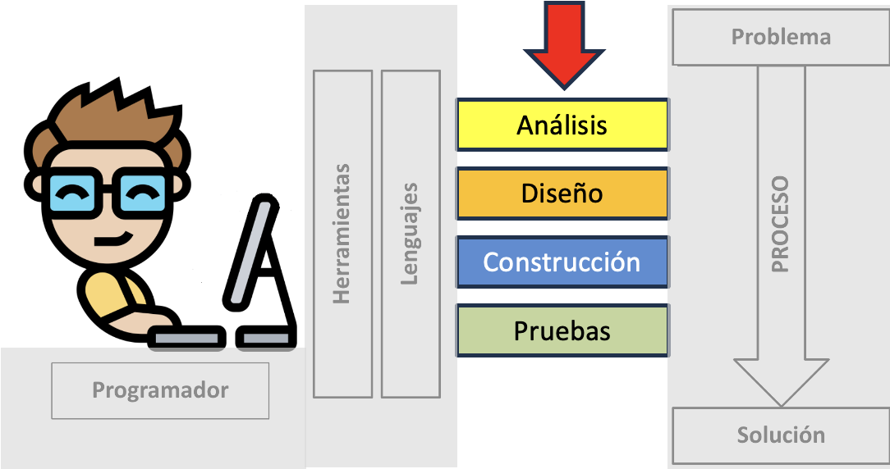

<!DOCTYPE html>
<html lang="en">
  <head>
    <meta charset="utf-8" />
    <meta name="viewport" content="width=device-width, initial-scale=1.0, maximum-scale=1.0, user-scalable=no" />

    <title></title>
    <link rel="stylesheet" href="dist/reveal.css" />
    <link rel="stylesheet" href="dist/theme/iph.css" id="theme" />
    <link rel="stylesheet" href="plugin/highlight/spyder.css" />
	<link rel="stylesheet" href="css/layout.css" />
	<link rel="stylesheet" href="plugin/customcontrols/style.css">


    <script defer src="dist/fontawesome/all.min.js"></script>

	<script type="text/javascript">
		var forgetPop = true;
		function onPopState(event) {
			if(forgetPop){
				forgetPop = false;
			} else {
				parent.postMessage(event.target.location.href, "app://obsidian.md");
			}
        }
		window.onpopstate = onPopState;
		window.onmessage = event => {
			if(event.data == "reload"){
				window.document.location.reload();
			}
			forgetPop = true;
		}

		function fitElements(){
			const itemsToFit = document.getElementsByClassName('fitText');
			for (const item in itemsToFit) {
				if (Object.hasOwnProperty.call(itemsToFit, item)) {
					var element = itemsToFit[item];
					fitElement(element,1, 1000);
					element.classList.remove('fitText');
				}
			}
		}

		function fitElement(element, start, end){

			let size = (end + start) / 2;
			element.style.fontSize = `${size}px`;

			if(Math.abs(start - end) < 1){
				while(element.scrollHeight > element.offsetHeight){
					size--;
					element.style.fontSize = `${size}px`;
				}
				return;
			}

			if(element.scrollHeight > element.offsetHeight){
				fitElement(element, start, size);
			} else {
				fitElement(element, size, end);
			}		
		}


		document.onreadystatechange = () => {
			fitElements();
			if (document.readyState === 'complete') {
				if (window.location.href.indexOf("?export") != -1){
					parent.postMessage(event.target.location.href, "app://obsidian.md");
				}
				if (window.location.href.indexOf("print-pdf") != -1){
					let stateCheck = setInterval(() => {
						clearInterval(stateCheck);
						window.print();
					}, 250);
				}
			}
	};


        </script>
  </head>
  <body>
    <div class="reveal">
      <div class="slides"><section  data-markdown><script type="text/template"><!-- .slide: class="has-light-background drop" data-background-color="#f8f8f8" -->
<div class="" style="position: absolute; left: 0px; top: 0px; height: 700px; width: 960px; min-height: 700px; display: flex; flex-direction: column; align-items: center; justify-content: center" absolute="true">

### Estructura de Datos y Algoritmos - EDA

 ####  *Contratos y metodología*

[Eduardo Rosales](mailto:ee.rosales24@uniandes.edu.co)

Departamento de Ingeniería de Sistemas y Computación

Universidad de los Andes
</div></script></section><section  data-markdown><script type="text/template"><!-- .slide: class="has-light-background drop" data-background-color="#f8f8f8" -->
<div class="" style="position: absolute; left: 0px; top: 0px; height: 700px; width: 960px; min-height: 700px; display: flex; flex-direction: column; align-items: center; justify-content: center" absolute="true">

### Contratos - doctrings
    
- Documentación de funciones
	- Explican el propósito de la función
- Encerrados en comillas triples (```"""```)​
- **En EDA**, incluyen:​
	- Descripción/propósito​
	- Parámetros (*Parameters*)​
		- Nombre, tipo (_type_), descripción, valor por defecto (si lo hay)​
	- Valor de retorno (*Returns*, Retorna)​
		- Nombre (si se nombra) y descripción (si alguna)​
	- Tipo de retorno (*rtype*)​
</div></script></section><section  data-markdown><script type="text/template"><!-- .slide: class="has-light-background drop" data-background-color="#f8f8f8" -->
<div class="" style="position: absolute; left: 0px; top: 0px; height: 700px; width: 960px; min-height: 700px; display: flex; flex-direction: column; align-items: center; justify-content: center" absolute="true">

### doctrings - Ejemplo
    
```Python
def suma(primer_operando: int, segundo_operando: int) -> int:
    """
    Calcula la suma de dos números enteros.

    :param primer_operando: El primer número entero a sumar.
    :type primer_operando: int
    :param segundo_operando: El segundo número entero a sumar.
    :type segundo_operando: int

    :returns: El resultado de sumar los dos números enteros.
    :rtype: int
    """
    return primer_operando + segundo_operando
```
</div></script></section><section  data-markdown><script type="text/template"><!-- .slide: class="has-light-background drop" data-background-color="#f8f8f8" -->
<div class="" style="position: absolute; left: 0px; top: 0px; height: 700px; width: 960px; min-height: 700px; display: flex; flex-direction: column; align-items: center; justify-content: center" absolute="true">

### Documentación en el curso

- [Wiki de documentación de EDA](https://isis1225devs.github.io/ISIS1225-Structure-Documentation/index.html)
	- Especificación de estructuras de datos
		- Del curso​
			- Ej: Set, List, Stack, Queue
</div></script></section><section  data-markdown><script type="text/template"><!-- .slide: class="has-light-background drop" data-background-color="#f8f8f8" -->
<div class="" style="position: absolute; left: 0px; top: 0px; height: 700px; width: 960px; min-height: 700px; display: flex; flex-direction: column; align-items: center; justify-content: center" absolute="true">

### Metodología (1/7)

- En nuestra sección se aplica una versión resumida de la
  - Metodología de desarrollo de software:


</div></script></section><section  data-markdown><script type="text/template"><!-- .slide: class="has-light-background drop" data-background-color="#f8f8f8" -->
<div class="" style="position: absolute; left: 0px; top: 0px; height: 700px; width: 960px; min-height: 700px; display: flex; flex-direction: column; align-items: center; justify-content: center" absolute="true">

### Metodología (2/7)

- **El orden importa**
- Analogía: 
	- Construir un edificio
		- ❌ Luego, hacer su diseño
	
<br>


<!-- .element: style="width: 20%; height: 25%" -->
</div></script></section><section  data-markdown><script type="text/template"><!-- .slide: class="has-light-background drop" data-background-color="#f8f8f8" -->
<div class="" style="position: absolute; left: 0px; top: 0px; height: 700px; width: 960px; min-height: 700px; display: flex; flex-direction: column; align-items: center; justify-content: center" absolute="true">

### Metodología (3/7)

- **Análisis**:
	1.  Identificar y especificar el problema
	2.  Identificar restricciones
	3.  Documentar
</div></script></section><section  data-markdown><script type="text/template"><!-- .slide: class="has-light-background drop" data-background-color="#f8f8f8" -->
<div class="" style="position: absolute; left: 0px; top: 0px; height: 700px; width: 960px; min-height: 700px; display: flex; flex-direction: column; align-items: center; justify-content: center" absolute="true">

### Metodología (4/7)

- **Diseño**:
	 1. Formular ejemplos
		- Casos significativos y no redundantes
	 2. Diseñar el algoritmo
		 - Plan de solución paso a paso
	 3. Diseñar y documentar las pruebas
</div></script></section><section  data-markdown><script type="text/template"><!-- .slide: class="has-light-background drop" data-background-color="#f8f8f8" -->
<div class="" style="position: absolute; left: 0px; top: 0px; height: 700px; width: 960px; min-height: 700px; display: flex; flex-direction: column; align-items: center; justify-content: center" absolute="true">

### Metodología (5/7)

- **Construcción**:
	- Codificar/implementar el diseño usando:
		- Documentación
        - Convenciones
        - Buenas prácticas de programación
</div></script></section><section  data-markdown><script type="text/template"><!-- .slide: class="has-light-background drop" data-background-color="#f8f8f8" -->
<div class="" style="position: absolute; left: 0px; top: 0px; height: 700px; width: 960px; min-height: 700px; display: flex; flex-direction: column; align-items: center; justify-content: center" absolute="true">

### Metodología (6/7)

- **Pruebas**:
	1. Verificar si el resultado obtenido es el esperado
	2. Depurar:
    	- Corregir errores
    	- Pulir/mejorar/optimizar
</div></script></section><section  data-markdown><script type="text/template"><!-- .slide: class="has-light-background drop" data-background-color="#f8f8f8" -->
<div class="" style="position: absolute; left: 0px; top: 0px; height: 700px; width: 960px; min-height: 700px; display: flex; flex-direction: column; align-items: center; justify-content: center" absolute="true">

### Metodología (7/7)

- Aplicar **paso a paso** la metodología
	- Permite solucionar un problema
		- A través de la programación


</div></script></section><section  data-markdown><script type="text/template"><!-- .slide: class="has-light-background drop" data-background-color="#f8f8f8" -->
<div class="" style="position: absolute; left: 0px; top: 0px; height: 700px; width: 960px; min-height: 700px; display: flex; flex-direction: column; align-items: center; justify-content: center" absolute="true">

### ¿Cómo se implementan las pruebas?
</div></script></section><section  data-markdown><script type="text/template"><!-- .slide: class="has-light-background drop" data-background-color="#f8f8f8" -->
<div class="" style="position: absolute; left: 0px; top: 0px; height: 700px; width: 960px; min-height: 700px; display: flex; flex-direction: column; align-items: center; justify-content: center" absolute="true">

### Pruebas en la sección 4

- En **presentaciones**:
	- Se usarán doctests
		- Para ejemplificar resultados esperados


	<br>

- En **laboratorios y retos**:
	- Implementan **otro tipo de prueba**
		- _Explicación en los laboratorios_
</div></script></section><section  data-markdown><script type="text/template"><!-- .slide: class="has-light-background drop" data-background-color="#f8f8f8" -->
<div class="" style="position: absolute; left: 0px; top: 0px; height: 700px; width: 960px; min-height: 700px; display: flex; flex-direction: column; align-items: center; justify-content: center" absolute="true">

### `doctest` 

- Incorporan casos de prueba 
	- Dentro de la documentación​ de una función
- Permiten probar una función **directamente​**

- Ayuda: [doctest](https://docs.python.org/3/library/doctest.html)
```Python
import doctest
help(doctest.testmod)
```
</div></script></section><section  data-markdown><script type="text/template"><!-- .slide: class="has-light-background drop" data-background-color="#f8f8f8" -->
<div class="" style="position: absolute; left: 0px; top: 0px; height: 700px; width: 960px; min-height: 700px; display: flex; flex-direction: column; align-items: center; justify-content: center" absolute="true">

### Función `suma`

```Python
def suma(primer_operando: int, segundo_operando: int) -> int:
    """
    Calcula la suma de dos números enteros.

    :param primer_operando: El primer número entero a sumar.
    :type primer_operando: int
    :param segundo_operando: El segundo número entero a sumar.
    :type segundo_operando: int

    :returns: El resultado de sumar los dos números enteros.
    :rtype: int
    """
    return primer_operando + segundo_operando
```
</div></script></section><section  data-markdown><script type="text/template"><!-- .slide: class="has-light-background drop" data-background-color="#f8f8f8" -->
<div class="" style="position: absolute; left: 0px; top: 0px; height: 700px; width: 960px; min-height: 700px; display: flex; flex-direction: column; align-items: center; justify-content: center" absolute="true">

### `doctest` - Ejemplo (1/2)

```Python[14-21]
import doctest
def suma(primer_operando: int, segundo_operando: int) -> int:
    """
    Calcula la suma de dos números enteros.

    :param primer_operando: El primer número entero a sumar.
    :type primer_operando: int
    :param segundo_operando: El segundo número entero a sumar.
    :type segundo_operando: int

    :returns: El resultado de sumar los dos números enteros.
    :rtype: int

    >>> suma(0, 0)  # Caso solo ceros
    0
    >>> suma(2, 2)  # Caso enteros positivos
    4
    >>> suma(-2, -10)  # Caso enteros negativos
    -12
    >>> suma(-2, 5)  # Caso enteros positivos y negativos
    3
    """
    return primer_operando + segundo_operando

doctest.run_docstring_examples(suma, globals(), verbose=True)
```
</div></script></section><section  data-markdown><script type="text/template"><!-- .slide: class="has-light-background drop" data-background-color="#f8f8f8" -->
<div class="" style="position: absolute; left: 0px; top: 0px; height: 700px; width: 960px; min-height: 700px; display: flex; flex-direction: column; align-items: center; justify-content: center" absolute="true">

### `doctest` - Ejemplo (2/2)

- ✅ Todos los tests son exitosos
	- Así debería verse el resultado:

```Plaintext
Trying:
    suma(0, 0)  # Caso solo ceros
Expecting:
    0
ok
Trying:
    suma(2, 2)  # Caso enteros positivos
Expecting:
    4
ok
Trying:
    suma(-2, -10)  # Caso enteros negativos
Expecting:
    -12
ok
Trying:
    suma(-2, 5)  # Caso enteros positivos y negativos
Expecting:
    3
ok
```
</div></script></section><section  data-markdown><script type="text/template"><!-- .slide: class="has-light-background drop" data-background-color="#f8f8f8" -->
<div class="" style="position: absolute; left: 0px; top: 0px; height: 700px; width: 960px; min-height: 700px; display: flex; flex-direction: column; align-items: center; justify-content: center" absolute="true">

### `doctest` - Interpretando los resultados

- **Primer test**: ¿por qué es exitoso?

```Python
def suma(primer_operando: int, segundo_operando: int) -> int:
    """
	    ...
        >>> 	suma(0, 0)  # Caso solo ceros
	    0
	    ...
    """
    return primer_operando + segundo_operando
```


```Plaintext
Trying:
    suma(0, 0)  # Caso solo ceros
Expecting:
    0
ok
```

- El primer test es exitoso:
	- Salida esperada: `0`
	- Salida obtenida: **`0`**
		- Porque  `primer_operando` + `segundo_operando` (0 + 0) es igual a **`0`**
</div></script></section><section  data-markdown><script type="text/template"><!-- .slide: class="has-light-background drop" data-background-color="#f8f8f8" -->
<div class="" style="position: absolute; left: 0px; top: 0px; height: 700px; width: 960px; min-height: 700px; display: flex; flex-direction: column; align-items: center; justify-content: center" absolute="true">

# TODOS

- **TODO1:**
	- Leer:
		- [**Guía de documentación**](https://isis1225devs.github.io/ISIS1225-Structure-Documentation/documentation-guide.html)

- **TODO2:**
	- Formar **grupo de 3**
		- Idealmente, **antes** del jueves
</div></script></section><section  data-markdown><script type="text/template"><!-- .slide: class="has-light-background drop" data-background-color="#f8f8f8" -->
<div class="" style="position: absolute; left: 0px; top: 0px; height: 700px; width: 960px; min-height: 700px; display: flex; flex-direction: column; align-items: center; justify-content: center" absolute="true">

<i class="fas fa-question-circle fa-2x fa-spin fa-4x"></i>


<br>
<br>


[<i class="fas fa-home  fa-3x"></i>](https://eerosales24.github.io/eda_2025_20/#)
</div></script></section></div>
    </div>

    <script src="dist/reveal.js"></script>

    <script src="plugin/markdown/markdown.js"></script>
    <script src="plugin/highlight/highlight.js"></script>
    <script src="plugin/zoom/zoom.js"></script>
    <script src="plugin/notes/notes.js"></script>
    <script src="plugin/math/math.js"></script>
	<script src="plugin/mermaid/mermaid.js"></script>
	<script src="plugin/chart/chart.min.js"></script>
	<script src="plugin/chart/plugin.js"></script>
	<script src="plugin/customcontrols/plugin.js"></script>

    <script>
      function extend() {
        var target = {};
        for (var i = 0; i < arguments.length; i++) {
          var source = arguments[i];
          for (var key in source) {
            if (source.hasOwnProperty(key)) {
              target[key] = source[key];
            }
          }
        }
        return target;
      }

	  function isLight(color) {
		let hex = color.replace('#', '');

		// convert #fff => #ffffff
		if(hex.length == 3){
			hex = `${hex[0]}${hex[0]}${hex[1]}${hex[1]}${hex[2]}${hex[2]}`;
		}

		const c_r = parseInt(hex.substr(0, 2), 16);
		const c_g = parseInt(hex.substr(2, 2), 16);
		const c_b = parseInt(hex.substr(4, 2), 16);
		const brightness = ((c_r * 299) + (c_g * 587) + (c_b * 114)) / 1000;
		return brightness > 155;
	}

	var bgColor = getComputedStyle(document.documentElement).getPropertyValue('--r-background-color').trim();
	var isLight = isLight(bgColor);

	if(isLight){
		document.body.classList.add('has-light-background');
	} else {
		document.body.classList.add('has-dark-background');
	}

      // default options to init reveal.js
      var defaultOptions = {
        controls: true,
        progress: true,
        history: true,
        center: true,
        transition: 'default', // none/fade/slide/convex/concave/zoom
        plugins: [
          RevealMarkdown,
          RevealHighlight,
          RevealZoom,
          RevealNotes,
          RevealMath.MathJax3,
		  RevealMermaid,
		  RevealChart,
		  RevealCustomControls,
        ],


    	allottedTime: 120 * 1000,

		mathjax3: {
			mathjax: 'plugin/math/mathjax/tex-mml-chtml.js',
		},
		markdown: {
		  gfm: true,
		  mangle: true,
		  pedantic: false,
		  smartLists: false,
		  smartypants: false,
		},

		mermaid: {
			theme: isLight ? 'default' : 'dark',
		},

		customcontrols: {
			controls: [
			]
		},
      };

      // options from URL query string
      var queryOptions = Reveal().getQueryHash() || {};

      var options = extend(defaultOptions, {"width":960,"height":700,"margin":"0.025","minScale":"0.1","maxScale":"2.0","controls":"true","controlsLayout":"bottom-right","progress":"true","slideNumber":"true","center":"false","transition":"slide","transitionSpeed":"default"}, queryOptions);
    </script>

    <script>
      Reveal.initialize(options);
    </script>
  </body>

  <!-- created with Advanced Slides -->
</html>
